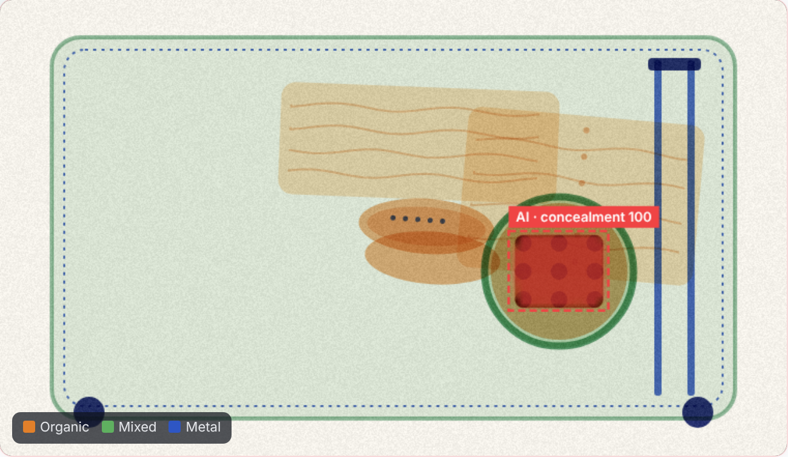
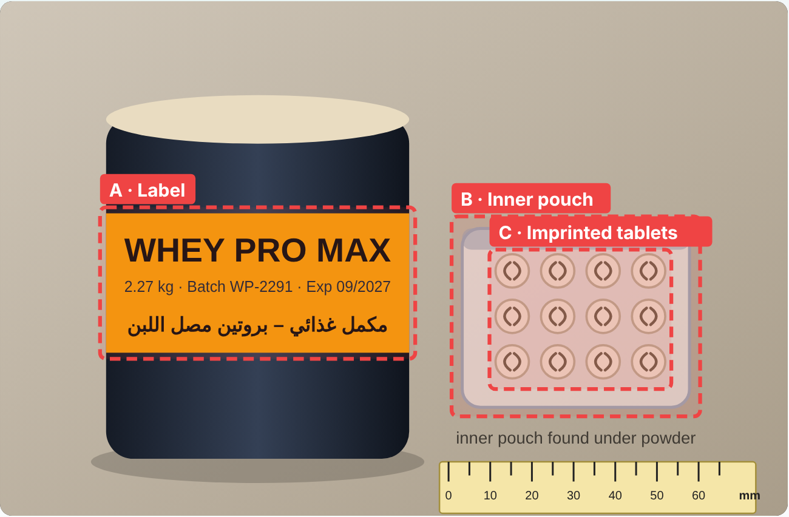
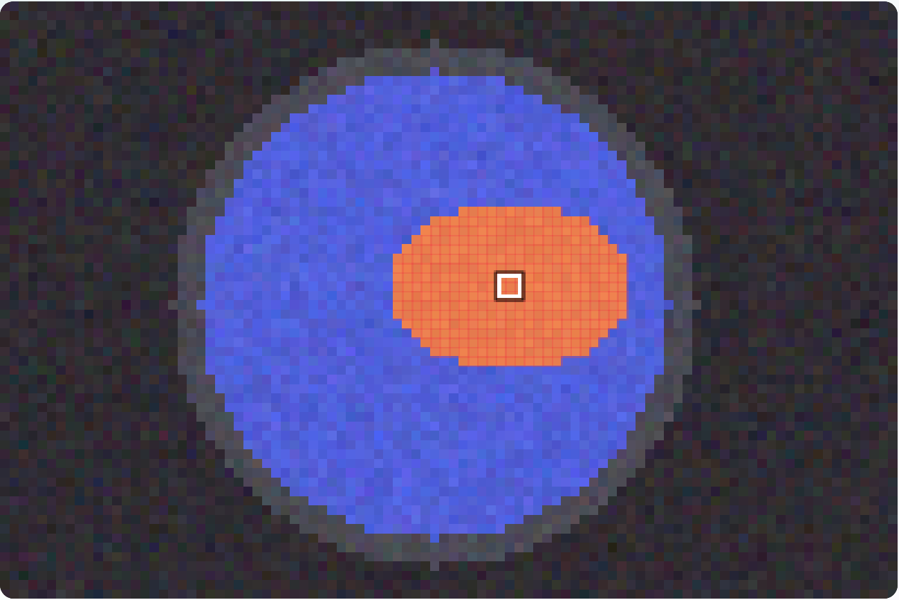
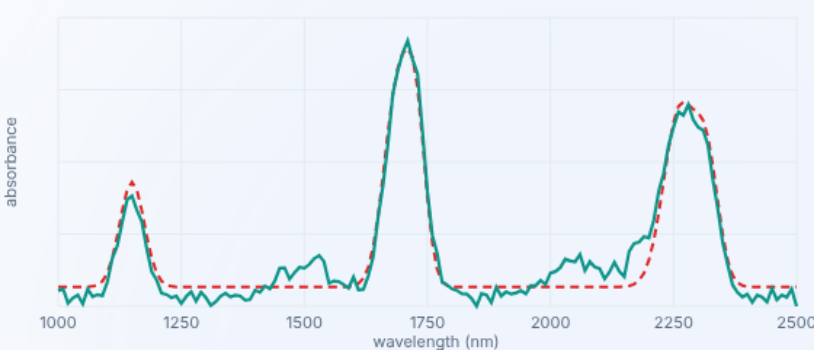
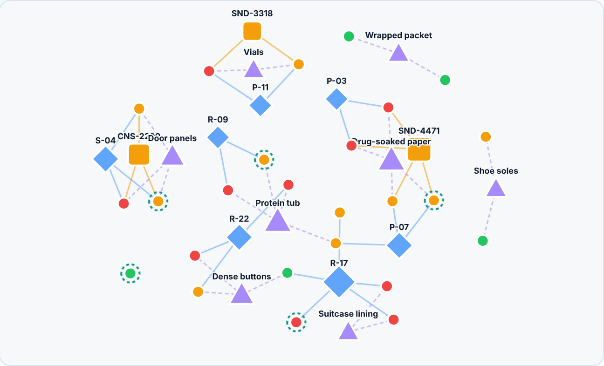
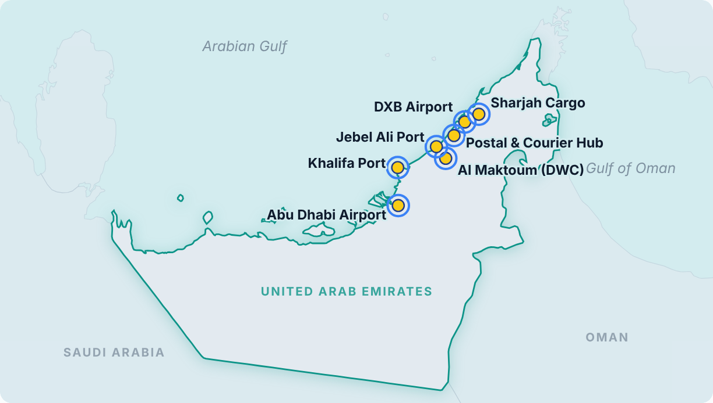
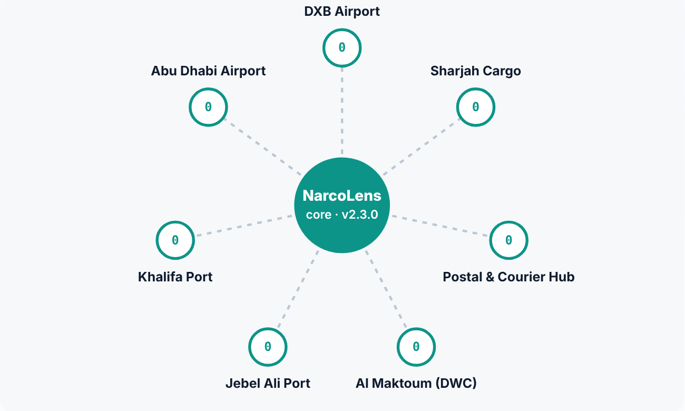

Border site · on-premise at each of the 7 UAE entry points · raw images never leave
X-ray scanner Dual-energy belt / cargo scanner existing
Desk camera Officer tablet at the inspection desk existing
Hyperspectral camera SWIR, 1000–2500 nm, at the desk add-on
Edge AI box Small GPU computer beside the scanner; runs M1–M3 in < 1 s per bag, works offline new · software-defined
model updates B
AI modules on the edge box

M1 X-ray Vision
Fully-convolutional segmentation net (28.7k params)
Pixel-level concealment heatmap + bag score
Test (600 bags): 100% recall, 1.7% false alarms

M2 Pills, Vials & Labels
Tablet-imprint CNN (88.1k params, 99.8% accuracy)
Arabic/English label OCR + registry check
Physical profile from the mm scale


M3 Hyperspectral ID
Identifies the substance through packaging
Pearson match to drug library + NNLS mixture unmixing
Library updated by M4 A
Officer in the loop
Sees the heatmap, evidence and fused score on the tablet; decides clear · re-scan · open · seize .
Every action is logged (audit trail); supervisor approves seizures.
Seized sample goes to the lab for legal confirmation → ①
Manifest & booking data
Route-pattern prior · no nationality / ethnicity
Inspection Case · one per bag / parcel
C-24133 · BAG-T3-118211
M5 Risk Fusion
Route prior 0.18
M1 X-ray 0.92
M2 Tablets 0.97
M3 Spectrum 0.95
S = 1 − ∏i (1 − wi pi )weighted noisy-OR evidence fusion
92
Fused risk score
Each module's share of the score is shown to the officer.
Clear Re-scan Open bag Seize
Every module writes to the same case: a single, time-stamped evidence timeline that becomes the court-ready evidence pack (PDF with chain of custody).
Example values from the prototype's demo case.
Sovereign core · on-prem government data centre

NET Network analytics
Links cases across sites by sender, route pattern and concealment method
Graph clustering → auto-generated insights for investigators

Command & supervisor apps
Live map and KPIs for all 7 entry points
Seizure approvals, override review, audit log
Shift heat calendar for K9 placement

FL Federated learning server B
Secure aggregation of site updates (Δ only)
Differential privacy (ε = 1–8); poisoned updates rejected
Signed models rolled out to every edge box
new variant (graph)
predicted spectrum
M4 Novel-Drug Predictor A
Graph neural network predicts the spectral fingerprint of new synthetic variants
Chemists validate → pushed to every M3 library before the first seizure
Continuous learning loop · runs after every lab-confirmed seizure
1 Lab confirms the seizure Forensic result = legal proof and the training label
2 Local retraining on site Edge box fine-tunes M1–M3 on its own confirmed cases
3 Clip · add noise (ε) · encrypt Δ Only the model update leaves the site, never images
4 Robust secure aggregation Core averages updates; outliers / poisoning rejected
5 Signed model to all 7 sites Every site learns from every seizure
at the border site
in the sovereign core
A B connector to the matching moduleexisting hardware customs already ownsM1 NarcoLens AI module
Figure 1. NarcoLens system architecture. Each UAE entry point runs an edge AI box beside its existing scanners. M1–M3 add evidence to a single Inspection Case per bag or parcel, and M5 fuses it into one explainable risk score; the officer makes the decision. Only case metadata and encrypted, noised model updates leave a site. The sovereign core links cases across sites, predicts new synthetic-drug variants (M4) and aggregates federated updates so that every site learns from every seizure. In the prototype, M1 and M2 are trained neural networks, M3 and M5 are live algorithms, and M4 and federated learning are simulated. All images are outputs of the working prototype on synthetic data.
evidence
signed models → edge boxes B